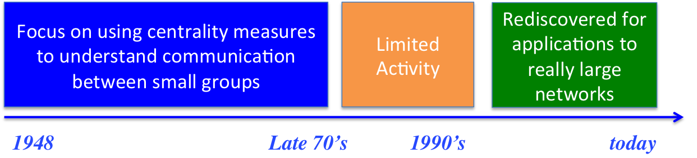

Getting Hangover Headaches Trying to Understand Complex System Structures!
Try Graph Centrality Algorithms as a Cure!
Created by Brian Mitchell / @DrBrianMitchell
History of Centrality
Centrality measures were first used in the field of Sociology to model and study influential people in groups
There was a time when this was a social network


And that was long before these things existed...

This is a foundational paper from 1979 that surveys the use of centrality algorithms in early social networks
Focus was on studying human communication and relationships to determine what drives influence
To Get Started We Need To Look at an Important Data Structure Used To Model Social Networks
Called a Graph
$G=(V,E)$
Graphs
Illustration

Notation
- $G=(V,E)$
- $V = \{v_{\tiny l} \mid v_{\tiny l} \in V, 1 \leq l \leq |V|\}$
- $E = \{\{u,v\} \mid \{u,v\} \in E \land u,v \in V\}$
- $deg(v) = \{|\{v,e\}| \mid \forall \{v,e_{\tiny i}\}\in E \land e_{\tiny i} \in V\}$
Just kidding, could not resist...
Graphs - By Example
Graph
Example Notation
- $G=(V,E)$
- $V = \{A, B, C, D, E\}$
- $E = \{(A,B),(B,C),(C,D),(C,E),(D,F),(E,F)\}$
- $deg(A)=1$
- $deg(B,D,E,F)=2$
- $deg(C)=3$
- The diameter of the graph is the largest degree, in this case 3
Graphs Come in Different Forms
Undirected Graph
Directed Graph
Directed Weighted Graph
They are also pretty simple data structures
case class Vertex(id:Integer, name:String)
case class Edge(id:Integer, src:Integer,
dest:Integer, weight:Integer=1)
class Graph(vset:List[Vertex], eset:List[Edge],
isDirected:Boolean = false)
Graphs Sometimes Also Make Nice Art
Social Network
Internet Graph

Internet Graph (2)
Malware Delivery Network

But what about Software Engineering?
Your new job - Day 1
Lets look at a system with
115 Classes & 363 dependencies
Here come the change requests...
Where should I start?
This looks complicated!
We Can Hack!
Or, We can try to understand...
These guys did some interesting work
I wonder what would happen if we applied these algorithms to software graphs?
Looks like they are also exploring the use of centrality algorithms on graphs
Back to the History of Centrality
- Early applications mainly focused on small group socialology problems
- Modern use cases investigate importance in large social networks, link analysis for search ranking, analysis of how diseases spread, telecommunication network optimization, and so on...
What about Software Engineering Applications
Back to the History of Centrality
- So in the early days social graphs were small, undirected, and calculations could be done by hand
- Modern graphs are large, tend to be directed, both add challenges
We will see how we deal with these challenges shortly
Classification of Centrality Algorithms
- Geometry Based Algorithms - Degree Centrality
- Path Based Algorithms - Closeness and Betweenes Centrality
- Spectral Techniques - Eigenvector, PageRank, Hits
We will need to do a little linear algebra review for the spectral techniques
Degree Centrality
Degree Centrality
Measure the degree of each node
Degree Centrality = $[2,4,3,2,3]$. So node B is the most influential!
Degree Centrality - Variation - Normalize
Divide by max number of Nodes (N-1)
Degree Centrality = $\left[\frac{1}{2},1,\frac{3}{4},\frac{1}{2},\frac{3}{4}\right]$. So node B is the most influential!
Degree Centrality - Centrality of Entire Network
$C_D =\frac{\sum_{i=1}^{N} [C_D(n^{*})-C_D(i)]}{[(N-1)(N-2)]}$
$C_D =\frac{(4-2)+(4-4)+(4-3)+(4-2)+(4-3)}{5 \times 4}$
$C_D =\frac{2+0+1+2+1}{20}$
$C_D =\frac{6}{20}$
$C_D = 0.3$
where $C_D(n^{*})$ is the maximum degree centrality and $[(N-1)(N-2)]$ represents the maximum number of ways that the nodes in the graph can be connected
Closeness Centrality
Closeness Centrality
Goal is to guage centrality based on how close nodes are to each other based on distance
- A path is a set of links connecting 2 nodes
- A shortest path is a set a path between 2 nodes with shortest distance
- The diameter of a graph is the maximum shortest path length between all node pairs
Closeness Centrality
Example: Paths from (A -> F)
- A → B → C → D → E → F [length:5]
- A → B → C → E → D → F [length:5]
- A → B → C → D → F [length:4]
- A → B → C → E → F [length:4]
All 4 are paths from A → F, the last 2 are shortest paths
Closeness Centrality
Closeness Centrality is Calculated as Follows
$C(x) = \left[\frac{\sum_{y, y \neq x}d(x,y)}{N-1}\right]^{-1}$
In other words the inverse of the average minimum distance from a node to all other nodes
For example:
$ C(A) = \left[\frac{1+2+3+3+4}{5}\right]^{-1} = \left[\frac{13}{5}\right]^{-1} = \frac{5}{13} = 0.385 $
Closeness Centrality
Closeness Centrality is Calculated as Follows
$ C(A) = \left[\frac{1+2+3+3+4}{5}\right]^{-1} = \left[\frac{13}{5}\right]^{-1} = \frac{5}{13} = 0.385 $
$ C(B) = \left[\frac{1+1+2+2+3}{5}\right]^{-1} = \left[\frac{9}{5}\right]^{-1} = \frac{5}{9} = 0.556 $
$ C(C) = \left[\frac{2+1+1+1+2}{5}\right]^{-1} = \left[\frac{7}{5}\right]^{-1} = \frac{5}{7} = 0.714 $
$ C(D) = \left[\frac{3+2+1+1+1}{5}\right]^{-1} = \left[\frac{8}{5}\right]^{-1} = \frac{5}{8} = 0.625 $
$ C(E) = \left[\frac{3+2+1+1+1}{5}\right]^{-1} = \left[\frac{8}{5}\right]^{-1} = \frac{5}{8} = 0.625 $
$ C(F) = \left[\frac{4+3+2+1+1}{5}\right]^{-1} = \left[\frac{11}{5}\right]^{-1} = \frac{5}{11} = 0.455 $
Closeness Centrality - Variation
Closeness Centrality is Calculated as Follows
$C(x) = \left[\frac{1}{\sum_{y, y \neq x}d(x,y)}\right]$
$ C(A) = \left[\frac{1}{1+2+3+3+4}\right] = \frac{1}{13} = 0.077 $
$ C(B) = \left[\frac{1}{1+1+2+2+3}\right] = \frac{1}{9} = 0.111 $
$ C(C) = \left[\frac{1}{2+1+1+1+2}\right] = \frac{1}{7} = 0.143 $
$ C(D) = \left[\frac{1}{3+2+1+1+1}\right] = \frac{1}{8} = 0.125 $
$ C(E) = \left[\frac{1}{3+2+1+1+1}\right] = \frac{1}{8} = 0.125 $
$ C(F) = \left[\frac{1}{4+3+2+1+1}\right] = \frac{1}{11} = 0.091 $
Closeness Centrality - Directed Graphs
Closeness Centrality - Issues with Directed Graphs
There are 2 problems with this Closeness Centrality on directed graphs
- First a path lenght might be infinate. Consider if the edge (D → B) was eliminated the path length to all other nodes would be infinate
- The notion of a shortest path in a directed graph might result in unintuitive answers
Problem 1: We need to deal with infinate distances
$C(x) = \left[\frac{1}{\sum_{y, y \neq x}d(x,y)}\right]$
$C(x) = \left[\frac{N-1}{\sum_{y, y \neq x}d(x,y)}\right]$
Turns out that if a distance is infinate we can use 0 for d(x,y). Recall from calculus that $\lim\limits_{x \to \infty}\frac{1}{x}=0$
Problem 2: Intuition with "closeness" for directed graphs might not always make sense
For the graph on the left:
$ C(A) = \left[\frac{1+2+3+2}{4}\right]^{-1} = \left[\frac{8}{4}\right]^{-1} = \frac{4}{8} = 0.5 $
$ C(B) = \left[\frac{2+1+2+1}{4}\right]^{-1} = \left[\frac{6}{4}\right]^{-1} = \frac{4}{6} = 0.667 $
$ C(C) = \left[\frac{1+2+4+3}{4}\right]^{-1} = \left[\frac{10}{4}\right]^{-1} = \frac{4}{10} = 0.4 $
$ C(D) = \left[\frac{3+1+1+2+2}{4}\right]^{-1} = \left[\frac{8}{4}\right]^{-1} = \frac{4}{8} = 0.5 $
$ C(E) = \left[\frac{2+3+1+1}{4}\right]^{-1} = \left[\frac{7}{4}\right]^{-1} = \frac{4}{7} = 0.571 $
Betweeness Centrality
Between Centrality - Basic Idea
- Find shortest paths between all node pairs in the graph
- Award "points" to nodes for being on each of shortest the shortest paths
- Intuition: Influential nodes play a more important role in connecting the graph together
Between Centrality Example
Small(Red) to Large(Blue)

Back to our example
- Determine shortest Paths
- (A→B), (A→C), (A→D), (A→E), (B→C), (B→D), (B→E), (C→D), (C→E), (E→D), (B→A), (C→A), (D→A), (E→A), (C→B), (D→B), (E→B), (D→C), (E→C), (D→E)
- Eliminate all "direct" paths
- (A→B), (A→C), (A→D), (A→E), (B→C), (B→D), (B→E), (C→D), (C→E), (E→D), (B→A), (C→A), (D→A), (E→A), (C→B), (D→B), (E→B), (D→C), (E→C), (D→E)
Nodes on Shortest Path
| Node | A→C | A→D | A→E | B→D | C→D | C→E | B→A | D→A | E→A | C→B | E→B | D→C | D→E | TOT |
|---|---|---|---|---|---|---|---|---|---|---|---|---|---|---|
| A | 1 | 1 | 1 | 3 | ||||||||||
| B | 1 | 1 | 1 | 1 | 1 | 1 | 1 | 1 | 8 | |||||
| C | 1 | 1 | 1 | 3 | ||||||||||
| D | 1 | 1 | ||||||||||||
| E | 1 | 1 | 1 | 1 | 4 |
Back to our example
So the betweeness centrality is:
[A:3, B:8; C:3, D:1, E:4]
Ordered: [B, E, (A / C), D]
Like closeness centrality, betweenness centrality tends to work better on undirected graphs.
Node C seems like it should be more influential
Lets check this on our undirected graph - Much Better
So the betweeness centrality for this graph is:
[A:0, B:4; C:6, D:1.5, E:1.5, F:0]
Ordered: [C, B, (D / E), (A / F)]
Note where there are 2 or more shortest paths "credit" is split. For example, nodes D and E each get 1/2 because they are on equal shortest paths from C → F
Summary So Far
| Algorithm | Execution | Objective | SE Context |
|---|---|---|---|
| Degree | O(E) | Max (in/out) degree most important | High degree centrality can mean that a module has too much responsibility, or its very central for a valid reason such as a library or driver. |
| Closeness | O(V(V + E)) | Nodes that are closer to all other nodes are important | Modules that are tightly chosesive with many other modules are important |
| Betweenness | O(V * E) | Nodes that appear on many shortest paths are important | Highlights nodes that "connect" the graph, high centrality is a possible indicator of an interface to an architectural subsystem |
Other Observations
| Observation | SE Implication |
|---|---|
|
The execution complexity for large (dense) graphs may be prohibitive As a graph gets more dense $E$ approaches $V^2$ |
Sofware graphs tend to be sparse, reducing the execution complexity so its closer to $O(V^2)$ than $O(V^3)$ $E$ proportional to $V$ instead o $V^2$ |
|
Betwenness and Closeness measures tend to work better on undirected graphs Small changes in link structure in directed graphs might have a large impact on centrality |
Sofware graphs tend to be directed, but in many cases it's OK to treat them as undirected. In certain use cases the edge direction is important such as in link analysis. Think about splitting edge weight betweeen the dependant modules |
Math Review
Relations

A relation is a mapping from values in the domain to the range.
- The elements in domain and range must be defined, in this case $\mathbb{R}$
- The relation $R$ is defined as $R \subset R \times R$
Algebra review, lets consider a function, which is a special form of a relation
Functions uniquely map values from the domain to the range
Consider:
$f(x) = ax + b$
So solutions for $f(x)=2x$ fall on a line (shown in green) on right

Now Vectors
A vector is a line in an N-Dimentional space
So which node is most impportant?
Linear Transformations
Before we start a brief review of matrix multiplication
This is how to multiply a 2x2 matrix with a 1x2 vector:
$ \begin{bmatrix}a & b \\ c & d \end{bmatrix} \begin{bmatrix}I\\S\end{bmatrix} = \begin{bmatrix} aI + bS \\ cI + dS \end{bmatrix} $
For the purposes of this talk we will be focusing on square matricies [NxN] multiplied by [1xN] vectors. The resultant answer will always be a [1xN] vector
Examples
Example 1:
$ \begin{bmatrix}2 & 2 \\ 5 & -1 \end{bmatrix} \begin{bmatrix}2\\-5\end{bmatrix} = \begin{bmatrix} 4 - 10 \\ 10 + 5 \end{bmatrix} = \begin{bmatrix} -6 \\ 15 \end{bmatrix} $
Example 2:
$ \begin{bmatrix}2 & 2 \\ 5 & -1 \end{bmatrix} \begin{bmatrix}1\\1\end{bmatrix} = \begin{bmatrix} 2+2 \\ 5-1 \end{bmatrix} = \begin{bmatrix} 4 \\ 4 \end{bmatrix} $
Anybody notice anything special? More on this later
Rotation
$ \begin{bmatrix}\cos(\theta) & -\sin(\theta) \\ \sin(\theta) & \cos(\theta) \end{bmatrix} \begin{bmatrix}x\\y\end{bmatrix} = \begin{bmatrix}x' = x \cos(\theta)-y \sin(\theta)\\y' = x \sin(\theta)+y \cos(\theta)\end{bmatrix} $
In other words, point [x,y] is transformed to point [x',y'] via a rotation of $\theta$ degrees. Rotation is counter-clockwise if $\theta > 0$ and clockwise if $\theta < 0$
Reflection
$ \begin{bmatrix} 1 & 0 \\ 0 & -1 \end{bmatrix} \begin{bmatrix}x\\y\end{bmatrix} = \begin{bmatrix}x\\-y\end{bmatrix} $
Reflects on y axis
$ \begin{bmatrix} -1 & 0 \\ 0 & 1 \end{bmatrix} \begin{bmatrix}x\\y\end{bmatrix} = \begin{bmatrix}x\\-y\end{bmatrix} $
Reflects on x axis
$ \begin{bmatrix} 0 & 1 \\ 1 & 0 \end{bmatrix} \begin{bmatrix}x\\y\end{bmatrix} = \begin{bmatrix}x\\-y\end{bmatrix} $
Reflects in place
Shear
$ \begin{bmatrix} 1 & k \\ 0 & 1 \end{bmatrix} \begin{bmatrix}x\\y\end{bmatrix} = \begin{bmatrix}x+ky\\y\end{bmatrix} $
shears in x direction by k units
$ \begin{bmatrix} 1 & 0 \\ k & 1 \end{bmatrix} \begin{bmatrix}x\\y\end{bmatrix} = \begin{bmatrix}x\\y+kx\end{bmatrix} $
shears in x direction by k units
Stretch
$ \begin{bmatrix} k & 0 \\ 0 & 1 \end{bmatrix} \begin{bmatrix}x\\y\end{bmatrix} = \begin{bmatrix}kx\\y\end{bmatrix} $
stretches in x direction by k units
$ \begin{bmatrix} 1 & 0 \\ 0 & k \end{bmatrix} \begin{bmatrix}x\\y\end{bmatrix} = \begin{bmatrix}x\\ky\end{bmatrix} $
stretches in y direction by k units
Stretch (2)
$ \begin{bmatrix} k & 0 \\ 0 & k \end{bmatrix} \begin{bmatrix}x\\y\end{bmatrix} = \begin{bmatrix}kx\\ky\end{bmatrix} $
stretches in both directions by k units
What is interesting here is that this transform does not distort the image in any way, it simply scales it by a factor of $k$.
Now with this knowledge we can get to Eigenvectors (and Eigenvalues)
Geometrically visualizing Eigenvalues and Eigenvectors
$ \begin{bmatrix} k & 0 \\ 0 & k \end{bmatrix} \begin{bmatrix}x\\y\end{bmatrix} = \begin{bmatrix}kx\\ky\end{bmatrix} $
stretches in both directions by k units
Lets rewrite the equation sligthly by pulling out $k$:
$ \begin{bmatrix} k & 0 \\ 0 & k \end{bmatrix} \begin{bmatrix}x\\y\end{bmatrix} = k \begin{bmatrix}x\\y\end{bmatrix} $
In this form $k$ is the eigenvalue, and $[x,y]$ is an eigenvector. In other words an eigenvector scales the information ecapsulated in a given square matrix by a factor of $k$
So why is this so interesting?
Lets look at the equation for determinnig an eigenvector
$A \vec{v} = \lambda \vec{v} $
So given a square matrix $A$ and a vector $\vec{v}$ we need to dermine if such a $\vec{v}$ exists that soles this equation. If so, $\lambda$ is the eigenvector that scales $\vec{v}$ which is the eigenvector.
Recall our Matrix Multiplication Example
Example 1:
$ \begin{bmatrix}2 & 2 \\ 5 & -1 \end{bmatrix} \begin{bmatrix}2\\-5\end{bmatrix} = \begin{bmatrix} 4 - 10 \\ 10 + 5 \end{bmatrix} = \begin{bmatrix} -6 \\ 15 \end{bmatrix} = -3 \begin{bmatrix} 2 \\ -5 \end{bmatrix} $
Example 2:
$ \begin{bmatrix}2 & 2 \\ 5 & -1 \end{bmatrix} \begin{bmatrix}1\\1\end{bmatrix} = \begin{bmatrix} 2+2 \\ 5-1 \end{bmatrix} = \begin{bmatrix} 4 \\ 4 \end{bmatrix} = 4 \begin{bmatrix} 1 \\ 1 \end{bmatrix} $
So in this case [2,-5] and [1,1] are eigenvectors with eigenalues of -3 and 4 respectively
So this is kind of cool
The "information" in the matrix is stretched but does not fundementally change
The best way to think about this is that Eigenvectors help you compress information in an [N x N] dimentional space, into a [1 x N] dementional space

This is the basis for how Google ranks pages
Graph Notation
Graphs
Graph
Notation
- $G=(V,E)$
- $V = \{v_{\tiny l} \mid v_{\tiny l} \in V, 1 \leq l \leq |V|\}$
- $E = \{e_{\tiny i} = \{u,v\} \mid e_{\tiny i} \in E \land u,v \in V\}$
- $deg(v) = \{|\{v,e\}| \mid \forall \{v,e_{\tiny i}\}\in E \land e_{\tiny i} \in V\}$
Graphs
Graph
Notation
- $G=(V,E)$
- $V = \{A, B, C, D, E\}$
- $E = \{(A,B),(B,C),(C,D),(C,E),(D,F),(E,F)\}$
- $deg(A)=1$
- $deg(B,D,E,F)=2$
- $deg(C)=3$
Graphs
Undirected Graph
Directed Graph
Directed Weighted Graph
We saw this guy before...
Which node do you think is most influential?
Which node do you think is least influential?
Intuition for Page Rank
Directed Graph Example
Graph
Adjacency Matrix (x:From, y:To)
$ \begin{bmatrix} 0 & 0 & 1 & 0 & 0 \\ 1 & 0 & 0 & 1 & 0 \\ 0 & 1 & 0 & 0 & 1 \\ 0 & 0 & 0 & 0 & 1 \\ 0 & 1 & 0 & 0 & 0 \end{bmatrix} $
Directed Graph Example - Eigenvectors
Graph
Eigenvalues / Eigenvectors
Largest Eigenvalue: 1.395
$ \begin{bmatrix} A: 0.437 \\ B: 0.496 \\ C: 0.610 \\ D: 0.255 \\ E: 0.355 \end{bmatrix} $
We see that the relitive ranking is $[C,B,A,E,D]$ - seems to make sense, but $B$ does look a little more central / important (to me at least)
Directed Graph Example - Transition Matrix
Graph
Adjacency Matrix (x:From, y:To)
$ \begin{bmatrix} 0 & 0 & 1 & 0 & 0 \\ 1 & 0 & 0 & 1 & 0 \\ 0 & \frac{1}{2} & 0 & 0 & \frac{1}{2} \\ 0 & 0 & 0 & 0 & \frac{1}{2} \\ 0 & \frac{1}{2} & 0 & 0 & 0 \end{bmatrix} $
Directed Graph Example - Eigenvectors
Graph
Eigenvalues / Eigenvectors
Largest Eigenvalue: 1.0
$ \begin{bmatrix} A: 0.480 \\ B: 0.641 \\ C: 0.480 \\ D: 0.160 \\ E: 0.320 \end{bmatrix} $
We see that the relitave ranking is now $[B,C,A,E,D]$ - makes more sense $B$ seems more central, the rest of the ranking orders are the same
The most efficient eignenvector algorithm is $\mathcal{O}(n^3)$
void CubicComplexity( int N ) {
for(int i = 0; i < N; i++)
for(j=0; j < N; j++)
for(k=0; k < N; k++){
/* This will be cubic complexity */
}
}
How can we caluclate this with large graphs?

Lets revisit our sample graph
Directed Graph
Directed Graph w/ Transition Probabilities
Now imagine a Random Walk
Graph
Algorithm
- Pick a random node on the graph
- Increment a visit counter for that node
- Based on some small probability jump to a new random node; go to 1
- If possible, follow an outbound link at random based on the transition probability; go to 2
- Else if the node is a sync (there are no out edges), go to 1
- After some time the ratio of the visit counters for all nodes will remain proportional;
STOP
Now imagine a Random Walk
Graph
So What is Happening?
- For the math folks, the walk forms a Markov chain
- It turns out that after a managable number of interations the visit counters converge proportionally to the eigenvector of the transition matrix!
- So an expensive algorithm that is $\mathcal{O}(n^3)$ can be approximated by a quick iternative algorithm - WAY COOL!
Reveal.js
The HTML Presentation Framework
Created by Hakim El Hattab / @hakimel
Hello There
reveal.js enables you to create beautiful interactive slide decks using HTML. This presentation will show you examples of what it can do.
Vertical Slides
Slides can be nested inside of each other.
Use the Space key to navigate through all slides.
Basement Level 1
Nested slides are useful for adding additional detail underneath a high level horizontal slide.
Basement Level 2
That's it, time to go back up.
Slides
Not a coder? Not a problem. There's a fully-featured visual editor for authoring these, try it out at http://slides.com.
Point of View
Press ESC to enter the slide overview.
Hold down alt and click on any element to zoom in on it using zoom.js. Alt + click anywhere to zoom back out.
Touch Optimized
Presentations look great on touch devices, like mobile phones and tablets. Simply swipe through your slides.
Fragments
Hit the next arrow...
... to step through ...
... a fragmented slide.
Fragment Styles
There's different types of fragments, like:
grow
shrink
fade-out
current-visible
highlight-red
highlight-blue
Transition Styles
You can select from different transitions, like:
None -
Fade -
Slide -
Convex -
Concave -
Zoom
Themes
reveal.js comes with a few themes built in:
Black (default) -
White -
League -
Sky -
Beige -
Simple
Serif -
Blood -
Night -
Moon -
Solarized
Slide Backgrounds
Set data-background="#dddddd" on a slide to change the background color. All CSS color formats are supported.
Image Backgrounds
<section data-background="image.png">Tiled Backgrounds
<section data-background="image.png" data-background-repeat="repeat" data-background-size="100px">Video Backgrounds
<section data-background-video="video.mp4,video.webm">... and GIFs!
Background Transitions
Different background transitions are available via the backgroundTransition option. This one's called "zoom".
Reveal.configure({ backgroundTransition: 'zoom' })Background Transitions
You can override background transitions per-slide.
<section data-background-transition="zoom">Pretty Code
function linkify( selector ) {
if( supports3DTransforms ) {
var nodes = document.querySelectorAll( selector );
for( var i = 0, len = nodes.length; i < len; i++ ) {
var node = nodes[i];
if( !node.className ) {
node.className += ' roll';
}
}
}
}
Code syntax highlighting courtesy of highlight.js.
Marvelous List
- No order here
- Or here
- Or here
- Or here
Fantastic Ordered List
- One is smaller than...
- Two is smaller than...
- Three!
Tabular Tables
| Item | Value | Quantity |
|---|---|---|
| Apples | $1 | 7 |
| Lemonade | $2 | 18 |
| Bread | $3 | 2 |
Clever Quotes
These guys come in two forms, inline:
“The nice thing about standards is that there are so many to choose from”
and block:
“For years there has been a theory that millions of monkeys typing at random on millions of typewriters would reproduce the entire works of Shakespeare. The Internet has proven this theory to be untrue.”
Intergalactic Interconnections
You can link between slides internally, like this.
Speaker View
There's a speaker view. It includes a timer, preview of the upcoming slide as well as your speaker notes.
Press the S key to try it out.
Global State
Set data-state="something" on a slide and "something"
will be added as a class to the document element when the slide is open. This lets you
apply broader style changes, like switching the page background.
State Events
Additionally custom events can be triggered on a per slide basis by binding to the data-state name.
Reveal.addEventListener( 'customevent', function() {
console.log( '"customevent" has fired' );
} );
Take a Moment
Press B or . on your keyboard to pause the presentation. This is helpful when you're on stage and want to take distracting slides off the screen.
Much more
- Right-to-left support
- Extensive JavaScript API
- Auto-progression
- Parallax backgrounds
- Custom keyboard bindings